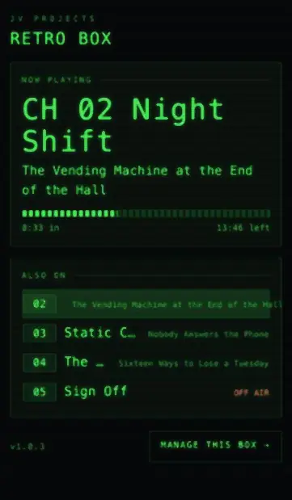
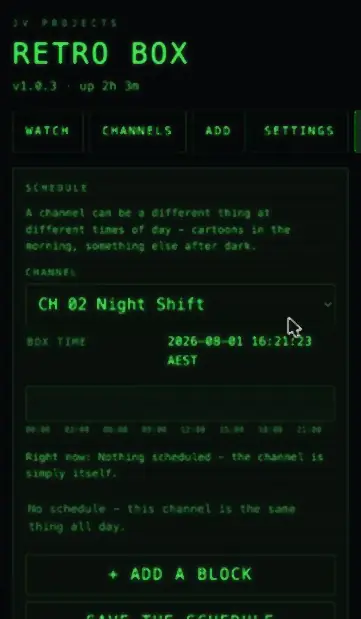
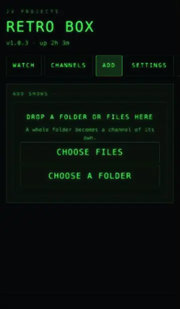

Open source · MIT · Ships empty
Turn a spare Linux box into the cable box you fell asleep in front of.
Retro Box plays folders of video off a drive as if they were real TV channels. Flip to a channel and something is already playing — a few seconds in, like you just tuned in.
View the source Get one ready to go Build your own
The whole thing is MIT licensed. Clone it and build one for the price of a secondhand mini PC.
The start-up sequence. It plays once and then the first channel comes up.
What it actually is
No menus. No apps. Nothing to browse.
There is no home screen to land on, no library to scroll and nothing recommending anything to you. You press channel-up and a programme is already running.
When an episode ends the next one rolls on an endless shuffle. Channels change with the clock. A sleep timer turns the whole thing off when you don’t. It boots straight to the picture on power-up, takes its orders from a plain IR remote, sends audio over HDMI, and draws a green on-screen display over a curved CRT picture.
It is one thing, and it does the one thing. That is the entire idea.
- No menus
- No apps
- No accounts
- No recommendations
- No algorithm
- No internet
| Marker | Ch | Channel | On now |
|---|---|---|---|
| Playing now | 02 | Night Shift | The Vending Machine at the End of the Hall |
| Highlighted | 03 | Static City | Nobody Answers the Phone |
| 04 | The Late Block | Sixteen Ways to Lose a Tuesday | |
| 05 | Bumper Reel | — station ident — | |
| 06 | Sign Off | Off air |
* is the channel playing behind the guide, > is the row you have highlighted.That one is a picture. Press G for the real one — this page has a dial too.
Why it feels like cable
Five things, and none of them are features.
Playing files in a random order is easy. Feeling like a broadcast is not. These are the five that do the work.
-
Dayparting
Channels that change with the clock
Real cable never showed the same thing at 3pm and 3am. Give a channel a list of wall-clock windows and it can rename itself, swap in a different folder, or sign off entirely to colour bars.
Boundaries land immediately, mid-episode. 22:00 arrives and the channel changes under you.
It works because the schedule doesn’t wait for you to be ready.
-
Broadcast mode
Channels that run whether you’re watching or not
Each channel gets a fixed shuffled running order and a start time, and from then on it advances against the wall clock. A channel you haven’t watched all evening has still been airing the whole time.
Flip away and back ten minutes later and you have missed ten minutes.
It works because you cannot pause it, and nothing waits for you.
-
Station bumpers
The glue between shows
Drop a folder of short clips — idents, we’ll-be-right-backs, station promos — and one plays between episodes. They shuffle the same way episodes do, so you never get the same one twice in a row, and they roll straight into the next show with no gap.
It works because the gaps are the part you actually remember.
-
The channel guide
One button, eight seconds
Press guide for a green grid: every channel, its current name, and what is on. Arrow up and down to browse, press OK to tune. Channels a daypart has taken off the air say so. The header carries the time, and the sleep timer if one is running.
It works because it is the only menu, and it clears itself off the screen without being asked.
-
The sleep timer
30 → 60 → 90 → off
Press sleep to cycle the ladder. A small Sleep 29m readout sits in the corner and counts down. When it runs out the box either blanks the screen or shuts the machine down properly — your choice, in one line of config.
It works because this is a box that lives next to a bed, and it knows it.
Run it from your phone
After the first boot it never needs a keyboard again.
Point any browser on the network at the box. No port number, no app to install, nothing to sign in to. Everything below happens from the sofa.

retrobox.local. Read-only, so nothing on it changes the channel by accident.

Real screens from the dashboard, at phone width. The channel and programme names in them are invented — the box ships empty.
-
The lineup
Create, rename, renumber, reorder and delete channels. Removing one takes it off the dial and never deletes your video files. Audio output, start-up volume and the sleep ladder are here too.
-
Uploads that survive real life
Files go up in pieces, so a dropped connection, a sleeping laptop or a closed tab carries on from where it stopped instead of starting over. Anything abandoned clears itself off the disk after a day.
Picking a whole folder needs a desktop browser. On an iPhone you get multi-file selection instead, and the page says so rather than showing a button that does nothing.
-
It updates itself, and undoes it
It checks for new releases and shows what changed — in plain words, for every version you would be skipping. One press applies it. Then it waits for the television to come back healthy, and puts the previous version back on its own if it doesn’t. It never installs anything without being asked.
-
Wi-Fi without a keyboard
Scan for networks and join one, set a static address, or change the hostname. Network changes go on probation: the box applies them, waits for you to confirm from the page, and restores the old settings by itself if you never come back. It cannot strand itself off the network.
-
Is my box all right
Version and uptime, the addresses it answers on, free space on the system and library disks separately, temperature and load where the hardware reports them, which remote receivers are live, and whether the file share is up. Written as plain answers, with the raw detail behind a toggle.
-
Press a button, watch it arrive
A live remote test: press a key on the remote and see it appear, with which receiver caught it and what it did. Programming the Flirc is the one step that cannot be automated away, and this turns checking it into something with feedback.
-
Logs, backups and the power switch
The last few hundred lines from the TV and the dashboard, filtered by service and level, with a plain-text search. Copy for support puts the log and the system detail on your clipboard as one block. Download the config before you change it, or upload one back — a bad file is checked and refused rather than leaving you with a box that won’t start.
-
Filler and the boot splash
Regenerate the static, glitch and colour-bar clips, set how often a bumper airs between episodes, and replace the start-up clip with one of your own — or turn it off.
There is no login. Anyone who can reach the box on your network can change the channel, upload and delete video, or shut it down. That is the right trade on a home network and the wrong one anywhere else — don’t port-forward it to the internet. To turn it off entirely: sudo systemctl disable --now retrobox-web.
What you need
Nothing exotic. Probably nothing new.
This is meant to run on whatever old box you already have. Cheap hardware is the point, not a compromise.
| A machine | Any x86 mini PC that will boot Linux — an ex-office desktop, a NUC, a Tiny or SFF thing off eBay — or a Raspberry Pi 4. 4 GB of RAM is plenty, and a decade-old CPU is fine once hardware decode is on. |
|---|---|
| An HDMI display | A TV, ideally. Any monitor works. |
| A Flirc and a remote | A Flirc USB adapter teaches itself any IR remote and presents it to Linux as a plain keyboard. The remote can be anything — an old cable box remote, a cheap universal, whatever is in the drawer. |
| Another computer | Windows, Mac or Linux, to write the USB stick and SSH in. You won’t need a keyboard on the box itself after first boot. |
| A USB stick | 8 GB or more, or an SD card, to install from. |
Six buttons cover the basics — channel up and down, volume up and down, mute, power. Four more unlock guide, sleep, info and last channel, plus a number pad if you want to punch in channel numbers. Any junk-drawer TV remote has all of them, which is rather the point.
Build your own
The whole thing is in the repo. Take it.
Retro Box is MIT licensed and the source is public. There is no paid tier of the software, no key to enter and nothing held back. Clone it, run one script, and you have the same box.
The installer works out what it is running on — Pi or PC — and installs the right libmpv and the matching video decode driver for your GPU. It sets up the network file share so you can drag shows on from any computer, generates the filler clips, writes a starter config, and installs the systemd unit so the box boots straight to TV with no login.
./scripts/install.sh --service
That is the whole install. The setup guide in the README covers the rest: flashing the OS, building the channel lineup, copying your files on, and teaching the Flirc your remote.
- Honest time estimate
- An evening. An hour or two of actual work, plus however long your files take to copy across.
- What it asks of you
- Comfort with a terminal and an SSH session. If that sentence made you tense, this is the part to know before you start.
- What you get
- Plain Python, 941 tests, and a suite that runs headless with no media, no display and no libmpv.
Or buy one ready to go
The same box, minus the Saturday.
Everything above stays free, and always will. This is the version where the sourcing, the installing and the configuring have already happened.
- Hardware already sourced and tested
- A machine that is known to work with this software, not one you are hoping works. Decode driver, HDMI audio and remote receiver confirmed on the actual unit before it ships.
- Installed and configured
- OS, drivers, autostart, file share, on-screen display. Nothing left half-set-up and no terminal in your evening.
- Plugs in and works
- HDMI, power, remote. It comes up as a television.
- Someone to ask
- For when it doesn’t.
It still ships empty. You supply the shows either way — that part does not change, and it is not something a paid box can do for you.
Questions
The ones that actually get asked.
- Does it come with shows on it?
-
No. It ships empty and there is nothing to browse, nothing to download and no library included.
You point a channel at a folder of video you already have, and that folder becomes the channel. One folder per channel is the whole convention. What goes on it is entirely your business and entirely your responsibility.
- What formats does it play?
Whatever mpv plays, which is basically everything. If it opens in VLC it will almost certainly open here.
- Can I use my existing remote?
Yes — that is what the Flirc is for. It learns any IR remote and presents it to Linux as an ordinary keyboard, so an old cable box remote or a cheap universal both work. Six buttons cover the basics and the keys work as shipped, with no config changes.
- Does it need internet?
Not to watch. It plays with no network at all — the picture, the channels, the guide and the remote need nothing but power and a screen.
A network is what gets you the rest: the dashboard on your phone, the file share, and the update check. All of that is optional, and all of it stays on your own network.
- Is the software really free?
Yes. MIT, the whole thing, in the repo. Build your own and you owe nobody anything.
- Does it work on a Raspberry Pi?
Yes, on a Pi 4, and on any x86 mini PC that boots Linux. The installer detects which one it is on and installs the right decode path for it — V4L2 on the Pi, VA-API on a PC.
Nothing is held back on the Pi. The dashboard, the uploads, the schedule editor, the updater and the network setup are the same code on both.
- Can I put one on a TV in a shop or a bar?
Playing video in a public space is a different licensing question to playing it at home, and it is not one this project can answer for you. Check where you are before you do it. That is not legal advice — it is just not a question worth pretending doesn’t exist.